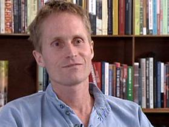

Autore: Peter Høeg
Editore: Mondadori
Pagine: 333
Genere: Thriller
Anno Pubblicazione: 2016
Thriller fantapolitico e pre-apocalittico, che abbraccia tutta la gamma dei sentimenti e delle capacità dell’essere umano: dalle intelligenze più sopraffine alle scelleratezze da esse derivanti, dall’amore più puro ai comportamenti sociali più biechi ed oscuri.
Il tutto quasi un ossimoro, a ben pensarci, ancor più perché ambientato durante le Festività Natalizie.
Qualsiasi cosa si cerchi in un libro, qui in qualche maniera, scavando appena un po’ la superficie e soprattutto avendo incontrato l’autore, il lettore rischia di trovarla.
Ed è un rischio non da poco, dato che ad incontrarlo si scopre che Peter Hoeg è un affabulatore capace di un incantamento dal quale ci si risveglia con sorpresa, malinconia ed una rinnovata conoscenza di se stessi che lascia sgomenti.
Perché la sua ricerca, dopo la lettura dell’ultimo romanzo scritto, diventa parte di noi: e non è comune all’essere umano interrogarsi sulla libertà dell’individuo (soprattutto conoscendo un po’ la storia dei paesi scandinavi), sulla solitudine e sulla ricerca di valori profondi?
Scritto magistralmente e giocato in modo sottile ma chiaro e fulminante fra tempi narrativi e commemorativi, veniamo portati in prima persona dalla voce narrante di Susan nel suo presente, con incursioni nel passato - suo e dei protagonisti comprimari - fino ad arrivare alla fine di un’era che potrebbe essere anche la nostra, dove non già la felicità individuale è in pericolo, ma proprio quella collettiva – a dimostrazione di una sensibilità di uomo in un’Europa unita ma ancora così fortemente separatista.
Diversamente da alcuni romanzi che ci catapultano in una realtà che si discosta dalla nostra e che ci appare fortemente fantascientifica, in questo romanzo l’autore si insinua nella storia del suo paese natale, la Danimarca, prendendo sicuramente spunto dalla storia reale e manipolandola ma soprattutto rendendola così affine al nostro vissuto, che Susan siamo noi.
Noi siamo danesi in primis ed occidentali poi, perché la vicenda, pur se ambientata in questo paese nordico, è comune agli altri paesi occidentali, anche se nominati marginalmente.
Una vicenda che ci fa conoscere egregiamente la città di Copenaghen in ogni sua struttura pubblica e statale e nella sua geografia.
Un tributo di questo scrittore alla sua terra, che ci viene presentata in tutti i suoi aspetti, sia quelli conosciuti sia quelli più nascosti a chi non vive in Danimarca, o non è cultore della storia e dei Paesi Scandinavi.
.
La vicenda, anche se a tratti è un po’ estenuante, è in sé fascinosa: negli anni post seconda guerra mondiale, fino ad acquisire maggiore importanza intorno agli anni ’70, in Danimarca l’intellighenzia che contava e veniva finanche ascoltata ad alti livelli era formata da giovani studenti universitari.
Ne era nata una Commissione per il Futuro che doveva studiare le dinamiche sociali che erano in divenire, dato i grandi sconvolgimenti politici, tecnologici ed economici in atto.
Una Commissione inizialmente composta da 6 persone, che piano piano si era allargata, accogliendo in sé le migliori menti pensanti di ogni disciplina. All’inizio gli incontri di questa commissione erano pochi – ma poi si erano fatti più frequenti e strutturati, tanto che ad un certo punto gli studi e le verifiche avevano portato questi giovani a “predire” anni in anticipo avvenimenti nazionali e mondiali che poi si erano puntualmente verificati. A questo punto il Governo si era interessato a loro e la Commissione aveva assunto sempre più importanza, pur rimanendo politicamente separata dal Governo stesso.
Inizia di fatto qui la storia di Susan, che a causa del suo dono si vedrà protagonista di un intreccio più grande di lei, più grande di come aveva immaginato e programmato la propria vita.
Quarantatreenne insegnante di fisica, incredibile “involucro cerebrale” con infinite conoscenze legate alla fisica, ma al contempo donna dall’oscuro e tragico passato.
Madre di due gemelli sedicenni, intelligente e forte scienziata che si occupa di fisica quantistica e che ha in sé una potenzialità che la rende unica: un effetto che ha sugli altri e che, anche a non saperlo controllare, induce le persone a rivelarle i propri pensieri più nascosti.
Quasi un superpotere, che in realtà potremmo definire empatia all’ennesima potenza, quando la persona che l’ha in sé sviluppa la consapevolezza di questo dono e accanto alla casualità di esso non Vi innesta il virgulto della capacità tutta umana dello sfruttamento e del travalicare l’etica umana.
E proprio per questo la sua mentore, Andrea Fink (altra grande studiosa), la vuole con sé alla Facoltà di Fisica.
Da qui in poi è tutto un susseguirsi di avvenimenti inframmezzati da omicidi brutali ma fantasiosi, fughe, rapimenti, situazioni orribilmente comiche e conversazioni che portano il lettore ad una riflessione continua sui temi della vita che da sempre affliggono ed affascinano l’essere umano.
Il romanzo si apre con Susan che va a trovare un’Andrea Fink morente - e si conclude nello stesso modo, ma con un arricchimento personale nella scoperta che, oltre al freddo sé stesso, alle proprie capacità che ci rendono autosufficienti, proprio in fondo a sé stessi si scopre che ci sono altre persone, ci sono GLI ALTRI.
In mezzo a tutto questo, come detto, tanti temi che il lettore incontra strada facendo: ci soffermiamo solo su uno che colpisce come una mazza, perché in nome di questo gli esseri umani compiono le azioni più estreme, come è stato fin dall’inizio dei secoli e che vale per tutte le specie animali:
“cosa saresti disposto a fare per i tuoi figli?”
E la risposta non potrà che essere una – ed una sola:
“Qualunque cosa!”
CURIOSITA’:
autore che dopo l’uscita dei suoi romanzi preferisce appartarsi e non condividere tutta la sua vita con i media e i socials, ad incontrarlo appare un uomo estremamente interessante per le storie che racconta anche durante gli incontri letterari, sempre gentile e disponibile. Per lui il contatto visivo, anche con estranei, è imprescindibile, tanto da firmare gli autografi solo a conversazioni terminate.
Impegnato in prima persona in una fondazione benefica di cui non vuole fare pubblicità e che viene gestita da poche persone in Danimarca, per non perdere il contatto con il denaro che entra e lo scopo per cui è stato raccolto, è impegnato altresì in una ricerca governativa sull’empatia e sull’effetto che produce sul corpo umano, ricerca che permea il suo ultimo romanzo “L’Effetto di Susan”.
 L'AUTORE - Peter Høeg (Copenaghen, 17 maggio 1957) è uno scrittore danese.
Il padre, Erik Høeg, è avvocato e la madre, Karen Kjellund, è una studiosa di filologia classica. Peter si diploma al Frederiksberg Gymnasium nel 1976 e in seguito studia letteratura comparata all'Università di Copenaghen, completando gli studi nel 1984. Prima di dedicarsi interamente alla scrittura, Høeg lavora come attore, ballerino, insegnante di recitazione e marinaio, e viaggia in lungo e in largo per il mondo, soprattutto in Africa. Sua moglie Akinyi è keniota.
Inizia a scrivere il suo primo romanzo La storia dei sogni danesi, quando frequenta ancora l'università e ci lavora per sei anni, sottoponendolo a infinite revisioni e acquisendo così una grande capacità di scrittura, fino alla sua pubblicazione nel 1988. Il suo libro successivo, edito nel 1990 è Racconti notturni e fa di lui il principale scrittore danese contemporaneo. Fin dall'inizio Høeg riceve un grande apprezzamento dalla critica, ma sarà solo con la pubblicazione del suo terzo libro Il senso di Smilla per la neve, che conquisterà fama internazionale, ricevendo nel 1994 il Premio Dilys (Dilys Award).
La vita di Høeg è caratterizzata da un forte impegno sociale, tanto che gli si deve la creazione di una fondazione, la Lolwe Foundation, finalizzata al miglioramento delle condizioni di vita delle donne e dei bambini nel Terzo mondo, un'organizzazione non-profit a cui lo scrittore ha devoluto tutti i proventi dalla vendita del suo libro La donna e la scimmia, pubblicato nel 1996.
Dal suo libro Il senso di Smilla per la neve, un "giallo" ambientato tra Copenaghen e i ghiacci della Groenlandia, il regista Bille August ha tratto un film con Julia Ormond (nel ruolo di Smilla), Gabriel Byrne e Vanessa Redgrave.
Dello stesso autore su THRILLERNORD:
IL LIBRO - La forte, indomabile Smilla, cresciuta nelle glaciali solitudini della Groenlandia, é coinvolta in un'indagine che riguarda un "incidente" sulla neve accaduto a un bambino. Ma Smilla é sicura che non si tratta di una disgrazia...
Se siete lettori appassionati visitate questo blog:
librodopolibro.com